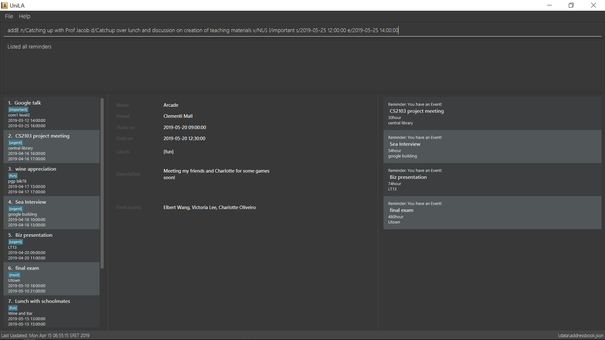

By: CS2103-W16-1 Since: Feb 2019 Licence: MIT
- 1. Introduction
- 2. Quick Start
- 3. Contact List Features
- 3.1. Viewing help :
help - 3.2. Switching views:
switch - 3.3. Adding a person:
add - 3.4. Listing all persons :
list - 3.5. Editing a person :
edit - 3.6. Locating persons by any field:
find - 3.7. Deleting a person:
delete - 3.8. Selecting a person:
select - 3.9. Listing entered commands :
history - 3.10. Undoing previous command :
undo - 3.11. Redoing the previously undone command :
redo - 3.12. Clearing all entries :
clear - 3.13. Exiting the program :
exit - 3.14. Saving the data
- 3.15. Encrypting data files
[coming in v2.0] - 3.16. Adding photo to a person :
photo - 3.17. Importing data from .json file :
import - 3.18. Exporting data to .json file by tag :
export
- 3.1. Viewing help :
- 4. Event List Features
- 5. Reminder Features
- 6. FAQ
- 7. Command Summary
1. Introduction
-
UniLA is a desktop utilities application designed for NUS students who are typing oriented.
-
UniLA provides an efficient and convenient solution for managing contact list and event list, contact interactions, planning meetings, setting up reminders, etc.
-
The application is primarily concerned with CLI (Command Line Interface) Interaction, with a simple and intuitive GUI provided.
2. Quick Start
-
Ensure you have Java version
9or later installed in your Computer. -
Download the latest
UniLA v1.4.jarhere. -
Copy the file to the folder you want to use as the home folder for your UniLA.
-
Double-click the file to start the app. The GUI should appear in a few seconds.
 -
Type the command in the command box and press Enter to execute it.
e.g. typinghelpand pressing Enter will open the help window. -
Some example commands you can try:
-
list: lists all contacts -
addn/John Doe p/98765432 e/johnd@example.com a/John street, block 123, #01-01: adds a contact namedJohn Doeto the UniLA. -
delete3: deletes the 3rd contact shown in the current list -
exit: exits the app
-
-
Refer to Section 3, “Contact List Features” for details of each command.
3. Contact List Features
Command Format
-
Words in
UPPER_CASEare the parameters to be supplied by the user e.g. inadd n/NAME,NAMEis a parameter which can be used asadd n/John Doe. -
Items in square brackets are optional e.g
n/NAME [t/TAG]can be used asn/John Doe t/friendor asn/John Doe. -
Items with
… after them can be used multiple times including zero times e.g.[t/TAG]…can be used ast/friend,t/friend t/familyetc. -
Parameters can be in any order e.g. if the command specifies
n/NAME p/PHONE_NUMBER,p/PHONE_NUMBER n/NAMEis also acceptable.
3.1. Viewing help : help
Format: help
3.2. Switching views: switch
Changes the view in the window. The default upon startup is in Contacts view. Running this command will toggle between contacts and events view.
Format: switch
Commands that require indices of one particular view as arguments may require you to switch to that view first. In those cases, switch to the appropriate view before running the command.
3.3. Adding a person: add
Adds a person to the UniLA
Format: add n/NAME p/PHONE_NUMBER e/EMAIL a/ADDRESS [t/TAG]…
| A person can have any number of tags (including 0) |
Examples:
-
add n/John Doe p/98765432 e/johnd@example.com a/John street, block 123, #01-01 -
add n/Betsy Crowe t/friend e/betsycrowe@example.com a/Newgate Prison p/1234567 t/criminal
3.4. Listing all persons : list
Shows a list of all persons in the UniLA.
Format: list
3.5. Editing a person : edit
Edits an existing person in the UniLA.
Format: edit INDEX [n/NAME] [p/PHONE] [e/EMAIL] [a/ADDRESS] [t/TAG]…
Examples:
-
edit 1 p/91234567 e/johndoe@example.com
Edits the phone number and email address of the 1st person to be91234567andjohndoe@example.comrespectively. -
edit 2 n/Betsy Crower t/
Edits the name of the 2nd person to beBetsy Crowerand clears all existing tags.
3.6. Locating persons by any field: find
Finds people whose fields contain any of the input keywords. Searching can be done with or without prefix. When searched without prefix, people whose fields that contain any matching keywords will be returned. When searched with prefix, people whose corresponding fields that contain any matching keywords will be returned.
Format1: find KEYWORD [MORE_KEYWORDS]
Format2: find prefix/KEYWORD, [MORE KEYWORDS]
These are 3 search patterns that are utilized be the find command:
-
Exact keyword match - Matches the input keyword with exact keywords found in people’s fields.
-
Fuzzy keyword match - Matches the input keyword to people’s fields that have higher than 0.7 similarity. The similarity is calculated based on Levenshtein Distance. Further explanation is provided in the developer guide.
-
Wildcard keyword match - Matches the input keyword with wildcard character *. * represents any number of alphanumeric characters consisting of 0-9, a-z and A-Z.
Searching results are displayed in the following format:
n persons listed:
Exact Search:
[NAME]…
Fuzzy Search:
[NAME]…
Wildcard Search:
[NAME]…
There are three parts of executing find command. The input keywords are first searched with exact string match, then fuzzy search, and finally wildcard search.
Any results displayed in the previous searching stage will not be shown in the next searching stage.For example, if person Alice is found in exact string match, she will not be displayed in fuzzy search result. This is to avoid message duplication. |
Examples:
-
find victoria
In exact search: Returns any person whose fields that contain keywordvictoriain exact search. For example, person whose name isVictoriaor person who lives inVictoria Street.
In fuzzy search: Returns any person whose fields that have keywords similar tovictoria. For example, person whose tags containing the keywordVictory. -
find Serangon doctor
In exact search: Returns any person whose fields that contain keywordsSerangonordoctor
In fuzzy search: Returns any person whose fields that have keywords similar toSerangonordoctor -
find t/owemoney friends
In exact search: Returns any person whose tags that contain keywordsowemoneyorfriends
In fuzzy search: Returns any person whose tags that have keywords similar to toowemoneyorfriends -
find *@gmail.com
In exact search: Returns any person whose fields that contain keywords*@gmail.com
In fuzzy search: Returns any person whose fields that have keywords similar to*@gmail.com
In wildcard search: Returns any person whose fields that have keywords match regex*@gmail.com
3.7. Deleting a person: delete
Deletes the specified person from the UniLA.
Format: delete INDEX
Examples:
-
list
delete 2
Deletes the 2nd person in the UniLA. -
find Betsy
delete 1
Deletes the 1st person in the results of thefindcommand.
3.8. Selecting a person: select
Selects the person identified by the index number used in the displayed person list.
Format: select INDEX
Examples:
-
list
select 2
Selects the 2nd person in the UniLA. -
find Betsy
select 1
Selects the 1st person in the results of thefindcommand.
3.9. Listing entered commands : history
Lists all the commands that you have entered in reverse chronological order.
Format: history
|
Pressing the ↑ and ↓ arrows will display the previous and next input respectively in the command box. |
3.10. Undoing previous command : undo
Restores the UniLA to the state before the previous undoable command was executed.
Format: undo
|
Undoable commands: those commands that modify the UniLA’s content ( |
Examples:
-
delete 1
list
undo(reverses thedelete 1command) -
select 1
list
undo
Theundocommand fails as there are no undoable commands executed previously. -
delete 1
clear
undo(reverses theclearcommand)
undo(reverses thedelete 1command)
3.11. Redoing the previously undone command : redo
Reverses the most recent undo command.
Format: redo
Examples:
-
delete 1
undo(reverses thedelete 1command)
redo(reapplies thedelete 1command) -
delete 1
redo
Theredocommand fails as there are noundocommands executed previously. -
delete 1
clear
undo(reverses theclearcommand)
undo(reverses thedelete 1command)
redo(reapplies thedelete 1command)
redo(reapplies theclearcommand)
3.12. Clearing all entries : clear
Clears all entries from the UniLA.
Format: clear
3.13. Exiting the program : exit
Exits the program.
Format: exit
3.14. Saving the data
UniLA data are saved in the hard disk automatically after any command that changes the data.
There is no need to save manually.
3.15. Encrypting data files [coming in v2.0]
{explain how the user can enable/disable data encryption}
3.16. Adding photo to a person : photo
Adds photo to a person in the contact list (identified by the index number used in the last listing).
Format1: photo INDEX IMAGE_PATH
Removes photo from a person in the contact list by the sub-command clear. Photo of the person will reset to the default photo.
Format2: photo INDEX clear
Examples:
-
list
photo 3 /users/alice/desktop/photo.png(in mac)
photo 3 C:\Users\william\Desktop\photo.jpg(in windows)
Adds photo to the 3rd person in the UniLA.
photo 3 clear
Removes the photo from the 3rd person in the UniLA. Photo is reset to the default photo.
| The added photo will be copied to the program. Thus, if the photo in the original path is moved, renamed or deleted, UniLA will not be affected. |
3.17. Importing data from .json file : import
Imports the data from an external .json file to the UniLA. The file may contains data about Contacts, Events and Reminders.
Format: import FILEPATH
Examples:
import data/contacts.json
3.18. Exporting data to .json file by tag : export
Exports the data to an external .json file from the UniLA. The file will contain all events, all reminders, and all contacts bearing the tag specified.
Format: export n/FILENAME p/FILEPATH [t/TAG]
Examples:
export n/mycontacts p/data t/friends
4. Event List Features
4.1. Connecting a person to an event : connect
Connects one contact from Contact List to Event List by contact index and event index
Format: connect ci/CONTACT_LIST_INDEX ei/EVENT_LIST_INDEX
Examples:
-
list
Find the participant index from Contact List.
listE
Find the event index from Event List.
connect ci/1 ei/2
Add the 1st person from Contact List into the 2nd event in the Event List.
4.2. Disconnecting a person with an event : disconnect
Disconnects one contact from Contact List to Event List by contact index and event index
Format: disconnect ci/CONTACT_LIST_INDEX ei/EVENT_LIST_INDEX
Examples:
-
list
Find the participant index from Contact List.
listE
Find the event index from Event List.
disconnect ci/1 ei/2
Disconnect the 1st person from Contact List with 2nd event in the Event List.
4.3. Adding an event: addE
Adds an event to event list+
Format: addE n/NAME d/DESCRIPTION v/VENUE s/STARTING_TIME e/ENDING_TIME l/LABEL
Examples:
-
addE n/career talk d/Google company info session v/com1 level2 s/2019-01-31 14:00:00 e/2019-01-31 14:00:00 l/important -
addE n/CS2103 project meeting d/quick meeting v/central library s/2019-12-31 16:00:00 e/2019-12-31 16:00:00 l/urgent
4.4. Deleting an event : deleteE
Deletes the specified event from the event list.
Format: deleteE INDEX
Examples:
-
listE
deleteE 2
Deletes the 2nd event in the event list.
4.5. Listing all events : listE
Shows a list of all events in the event list.
Format: listE
4.6. Editing an event : editE
Edits an existing event in the UniLA.
Format: editE INDEX [n/NAME] [d/DESCRIPTION] [v/VENUE] [s/STARTING_TIME] [e/ENDING_TIME] [l/LABEL]
Examples:
-
editE 1 d/short meeting l/top priority
Edits the description and label of the 1st event to beshort meetingandtop priorityrespectively. -
editE 2 v/com2 level4
Edits the venue of the 2nd event to becom2 level4.
4.7. Locating events by any field: findE
Finds events whose fields contain any of the input keywords. Searching can be done with or without prefix. When searched without prefix, events whose fields that contain any matching keywords will be returned. When searched with prefix, events whose corresponding fields that contain any matching keywords will be returned.
Format1: find KEYWORD [MORE_KEYWORDS]
Format2: find prefix/KEYWORD, [MORE KEYWORDS]
Examples:
-
findE google
Returns any events having fields that contain keywordsgoogle. For example, event whose name is 'Google talk' or event whose venue is 'Google building'. -
findE pgp library
Returns any events having fields that contain keywordspgporlibrary. For example, events with venue 'pgp' or 'central library'. -
findE l/important
Returns any event having label that contains keywordimportant.
There are two sub command of findE command which are findE time/ and findE duration/:
1. findE time/ finds events whose starting date are before, equal to or after the searching date. Alternatively alias (ytd, today or tmr) can be used to search for events whose starting date is yesterday, today or tomorrow.
Format3: findE time/operatorDATE
Format4: findE time/alias(ytd, today or tmr)
Examples:
-
findE time/>2019-12-01
Returns all the events whose starting dates are after 2019,12,1. -
findE time/tmr
Returns all the events that starting tomorrow.
2. findE duration/ finds events whose duration is smaller, equal to or larger than the searching period.
Format5: findE duration/operatorHOURS
Examples:
-
findE duration/<2
Returns all the events which are shorter than 2 hours. -
findE duration/>4
Returns all the events which are longer than 4 hours.
4.8. Planning a meeting : meet
This command allows users to automatically create a meeting event among certain people, removing the need to siphon through all the events just to find a common available timeslot among contacts to meet. The command will:
4.8.1. Creating a simple meeting:
This section will explain how to create a simple meeting event lasting 2 hours, with the defaults of:
The earliest this event would be created will be at the start of the next hour from the time the event was run. That is, if user ran the command on 1st Jan 2019 at 4:59pm, the earliest meeting event that could be created would be on 1st Jan 2019 at 5pm.
Format: meet INDEX or meet TAGS, or both meet INDEX TAGS where
and these fields must adhere to the following requirements:
Note: All fields are optional, but at least one valid person must be specified.
Note: Entering multiple tags create and/or relationships, more specifically, if a user specifies two tags, tagone and tagtwo, then every person who has tagone and/or tagtwo will be retrieved (think of it as a union of two sets, not the intersection).
Example 1:
-
list
List all contacts in index order. Find the indices of the contacts to meet. Say, the user requests to meet the 1st, 4th and 7th contact in this list.
meet 1 4 7
This creates a 2h meeting event including the 1st, 4th and 7th contact in the contacts list.
Example 2:
-
list
List all contacts in index order. Find the tags of the contacts to meet. Say, the user requests to meet contacts with thefriendstag.
meet t/friends
This creates a 2h meeting event including all contacts with thefriendstag.
Example 3:
-
list
List all contacts in index order. Find the indices and tags of the contacts to meet. Say, the user requests to meet the 1st and 3rd person, and everyone with thefamilyand/orcolleaguestags.
meet 1 3 t/family t/colleagues
This creates a 2h meeting event including the 1st, 3rd contact in the list, and all contacts with thefamilyand/orcolleaguestag.
4.8.2. Adding Event Details:
This section will explain how users can customize the name, description, venue and label of the meeting event, instead of sticking to the defaults.
Format: meet INDEX TAGS n/NAME d/DESCRIPTION v/VENUE l/LABEL where
and these fields must adhere to the following requirements:
Note: These fields are optional.
Example 1:
-
meet 1 n/Meetup with Alice
Creates a 2h meeting event with the first person in the contact list, and sets the event name to beMeetup with Alice.
Example 2:
-
meet 1 d/We’re going out for breakfast, then heading to Starbucks for a discussion on our next project.
Creates a 2h meeting with the first person in the contact list, and sets the description of the meeting to the above description.
Example 3:
-
meet 1 v/COM1-B1111
Creates a 2h meeting with the first person in the contact list, and sets the venue of the meeting toCOM1-B1111.
Example 4:
-
meet 1 l/meal
Creates a 2h meeting with the first person in the contact list, and sets the label of the meeting to bemeal.
Example 5:
-
meet 2 t/friends n/Barbeque d/BBQ with old friends v/Sheares Hall l/relaxed
Creates a 2h meeting with the second person in the contact list and all contacts with the tagfriends, and sets the event details to be the above.
4.8.3. Changing the Duration of the Event:
This section will explain how to change the duration of the event, instead of sticking to the default event duration of 2 hours. Note that the command will automatically search for the earliest available block of time of this same duration among all specified contacts, instead of only searching for 2-hour blocks.
Format: meet INDEX TAGS duration/D H M S where
and these fields must adhere to the following requirements:
Note: This field is optional, and D, H, M and S can be negative. The command works as long as the duration in its entirety is nonnegative.
Example 1:
-
meet 1 duration/0 2 0 0
Creates a 2h meeting with the first person in the contact list.
Example 2:
-
meet 1 duration/1 2 3 40
Creates a 1-day, 2-hour, 3-minute and 40-second long meeting event with the first person in the contact list.
Example 3:
-
meet 1 duration/0 1 -1 0
Creates a 59-minute meeting event with the first person in the contact list (1 hour and -1 minutes equates to 59 minutes).
4.8.4. Setting Restrictions on Meeting Events
This section will explain how the user can specify restrictions on the possible meeting event. This is so that the user can prevent meeting events being created with odd start timings or extremely late end timings.
Format: meet INDEX TAGS s/STARTDATETIME e/ENDDATETIME block/BLOCK where
and must adhere to the following requirements:
Note: The earliest possible start date and time is the default, i.e. the next hour from the time the user enters the command.
Example 1:
-
meet 1 s/2019-05-26 12:00:00
creates a new 2-hour long meeting event with the first person of the contact list, with the earliest possible start time of the event to be 26 May 2019 at 12pm, unless the time of entering the command is after 26 May 2019 11am.
Example 2:
-
meet 1 e/2019-04-01 22:30:00
creates a new 2-hour long meeting event with the first person of the contact list, with the latest possible end time of the event to be 1st April 2019 at 10.30pm. If UniLA cannot find a suitable timeslot before this stated date and time, UniLA will prompt that no event can be made.
Example 3:
-
meet 1 block/!22:59 02:00
creates a new 2-hour long meeting with the first person of the contact list, and the event must not fall within 10.59pm to 2am of the next day. If UniLA cannot find a suitable timeslot that falls within this block (likely because the duration of the event exceeds the duration permitted by this block), then UniLA will prompt that no event can be made.
Example 4:
-
meet 1 s/2019-05-01 00:00:00 e/2019-05-07 00:00:00 block/school
creates a new 2-hour long meeting with the first person of the contact list, and the event must start at or after 1st May 2019 at 12am, must end at or before 7th May 2019 at 12am, and must fall within school hours, i.e. within 8am to 6pm of the same day.
Defining a Valid Block:
A block denotes the block of time that the new meeting event must be in.
It contains two timings, and possibly a ! symbol, "negating" the block.
A block must be written as:
block/<Optional ! symbol><Either two sets of timings in HH:MM separated by space, or a keyword>
Examples:
-
block/00:00 13:32
indicates that the new meeting event must fall within 12am to 1.32pm within the same day (counting clockwise). -
block/!22:00 04:00
indicates that the new meeting event must not fall within 10pm to 4am the next day, or effectively, the new meeting event must fall within 4am to 10pm within the same day.
Instead of entering two timings, users may opt to enter a keyword instead. The following is the full list of available keywords:
Examples:
-
block/breakfast
indicates that the new meeting event must fall within breakfast hours, defined to be 7am to 10am. -
block/!night
indicates that the new meeting event must not fall within night time, defined to be 8pm to 12am the next day. Effectively, the event must fall within 12am to 8pm of the same day.
4.8.5. Full Meeting Planner Features
This section will explain how a user can make use of all the meeting planning features.
Format:
meet INDEX TAGS n/NAME d/DESCRIPTION v/VENUE l/LABEL duration/DURATION s/STARTDATETIME e/ENDDATETIME block/BLOCK where:
Example:
meet 1 2 t/friends t/colleagues n/Snooker competition d/Playing snooker again v/SAFRA Toa Payoh l/snooker duration/0 8 -30 0 s/2019-05-01 00:00:00 e/2019-05-07 00:00:00 block/09:00 18:00
creates an event whereby:
5. Reminder Features
5.1. Add reminder to certain event : addR
Format: addR EVENT_LIST_INDEX t/INTERVAL u/UNIT
The event with EVENT_LIST_INDEX will be reminded in pop up reminder list (please refer to Section 5.4, “Showing pop up reminder list : listR” for showing pop up reminder list ) before INTERVAL UNIT earlier than event beginning time
After reminder showing for 1 minute in pop up reminder list(please refer to Section 5.4, “Showing pop up reminder list : listR” for showing pop up reminder list )
Examples:
-
addR 1 t/3 u/MIN
Adds reminder to the 1st event in the UniLA.
The pop up time of reminder is 3 minutes before event’s beginning time. You can see the pop up reminder.
listR
Show the pop up reminder panel.
listFr
Show the full list of all reminders. You can always see the added reminder underlistFr.
5.2. Deleteing a reminder : deleteR
Delete reminders related to specific event. Or delete specific reminder.
Format: deleteR e/EVENT_LIST_INDEX r/REMINDER_LIST_INDEX
Example1:
-
listE
Find the event index
listFr
Show the full reminder list
deleteR e/2
Delete the reminders related with 2nd event. You can see the full reminder list reduces.
Example2:
-
listFr
Show the full reminder list and find the reminder index
deleteR r/1
Delete the 1st reminder in reminder full list.
6. FAQ
Q: How do I transfer my data to another Computer?
A: Install the app in the other computer and overwrite the empty data file it creates with the file that contains the data of your previous UniLA folder.
7. Command Summary
-
Add
add n/NAME p/PHONE_NUMBER e/EMAIL a/ADDRESS [t/TAG]…
e.g.add n/James Ho p/22224444 e/jamesho@example.com a/123, Clementi Rd, 1234665 t/friend t/colleague -
Clear :
clear -
Delete :
delete INDEX
e.g.delete 3 -
Edit :
edit INDEX [n/NAME] [p/PHONE_NUMBER] [e/EMAIL] [a/ADDRESS] [t/TAG]…
e.g.edit 2 n/James Lee e/jameslee@example.com -
Find :
find KEYWORD [MORE_KEYWORDS]
e.g.find James Jake -
List :
list -
Help :
help -
Select :
select INDEX
e.g.select 2 -
History :
history -
Undo :
undo -
Redo :
redo -
AddR :
addR EVENT_LIST_INDEX t/INTERVAL u/UNIT
e.g.addR 1 t/3 u/MIN -
DeleteR :
deleteR e/EVENT_LIST_INDEX r/REMINDER_LIST_INDEX
e.g.deleteR e/2 -
ListFr :
listFr
e.g.listFr -
ListR :
listR
e.g.listR -
AddE
addE n/NAME d/DESCRIPTION v/VENUE s/STARTING_TIME e/ENDING_TIME l/LABEL
e.g.addE n/career talk d/Google company info session v/com1 level2 s/2019-01-31 14:00:00 e/2019-01-31 14:00:00 l/important -
DeleteE :
delete INDEX
e.g.deleteE 3 -
EditE :
editE INDEX [n/NAME] [d/DESCRIPTION] [v/VENUE] [s/STARTING_TIME] [e/ENDING_TIME] [l/LABEL]
e.g.editE 1 d/short meeting l/top priority -
FindE :
findE KEYWORD [MORE_KEYWORDS]
or 'findE [n/NAME] [d/DESCRIPTION] [v/VENUE] [s/STARTING_TIME] [e/ENDING_TIME] [l/LABEL]
orfindE time/operatorDATE
orfindE time/alias(ytd, today or tmr)
orfindE duration/operatorHOURS
e.g.findE talk
e.g.findE s/2019-04-07 10:00:00
e.g.findE time/<2019-04-09
e.g.findE duration/<3 -
ListE :
listE -
Connect :
connect ci/CONTACT_LIST_INDEX ei/EVENT_LIST_INDEX -
Disconnect :
disconnect ci/CONTACT_LIST_INDEX ei/EVENT_LIST_INDEX -
Meet :
meet INDEX [MORE INDICES]